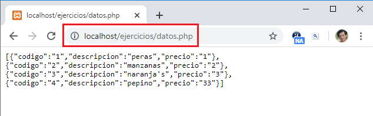
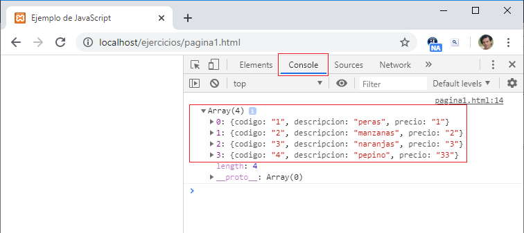

Listado completo de tutoriales
ES6 - API fetch (recuperar archivo json) |
El API fech remplaza las peticiones asíncronas del objeto XMLHttpRequest que hemos utilizado y seguimos utilizando en sitos web que tienen algunos años, es más conocida esta tecnología con el término Ajax (puede refrescar los conceptos en Ajax Ya).
El API fetch proporciona una mecánica más organizada para hacer peticiones asíncronas a servidores web.
Todos los navegadores modernos implementan el API fetch y se rigen por el estándar definido en whatwg.org.
El API fetch se base en un método llamado 'fetch' que depende del objeto 'window' como sucede con otros métodos vistos como 'alert', 'prompt' etc.
La sintáxis es muy sencilla, si tenemos que solicitar un archivo con formato JSON a un servidor web tenemos:
<!DOCTYPE html>
<html>
<head>
<title>Ejemplo de JavaScript</title>
<meta charset="UTF-8">
</head>
<body>
<script>
fetch("datos.php")
.then(response=>response.json())
.then(datos=>console.log(datos));
</script>
</body>
</html>
Teniendo en cuenta que hemos creado en el servidor una aplicación en el archivo "datos.php" que genera un archivo JSON con un listado de productos:
Luego mediante la llamada al método fetch se crea un objeto de tipo 'Promise', el cual tiene un método then que le debemos pasar como parámetro una función anónima que recibe en forma asíncrona la respuesta del servidor.
La respuesta la debemos convertir en nuestro caso a formato JSON, ese proceso se resuelve mediante un segundo objeto de tipo 'Promise':
fetch("datos.php")
.then(response=>response.json())
Como el método then retorna un nuevo objeto de tipo 'Promise' podemos encadenar una nueva llamada al método then donde procedemos a procesar el archivo JSON recuperado del servidor:
.then(datos=>console.log(datos));
Es decir que con estas dos llamadas encadenadas al método 'then' tenemos en nuestro navegador los datos del archivo 'JSON' listo para ser procesado (en nuestro caso solo lo hemos impreso en la 'console'):
En la práctica se utilizan las llamadas encadenadas por el método 'then' con el API fetch, pero para un mayor entendimiento resolveremos el mismo problema pero de la forma larga:
<script>
const promesa1=window.fetch("datos.php");
const promesa2=promesa1.then(response=>response.json());
promesa2.then(datos=>console.log(datos));
</script>
Como vemos llamamos al método 'fetch', recordando que es un método del objeto global 'window' y le pasamos el nombre del recurso que se encuentra en nuestro servidor web. El metodo 'fetch' retorna un objeto de tipo 'Promise' (una promesa encapsula la terminación o el fracaso de una operación asíncrona).
La terminación de la promesa se recibe en la llamada al método 'then', dicho método retorna una nueva promesa que en nuestro caso guardamos la referencia en la constante 'promesa2':
const promesa2=promesa1.then(response=>response.json());
Nuevamente el resultado de la segunda promesa se captura en la llamada al método 'then', donde procedemos a mostrar los datos ya transformado a formato JSON que se hizo en el 'then' anterior:
promesa2.then(datos=>console.log(datos));
Por último si no utilizamos funciones flecha el código anterior queda:
<script>
const promesa1 = window.fetch("datos.php");
const promesa2 = promesa1.then(function (response) {
return response.json()
});
promesa2.then(function (datos) {
console.log(datos);
});
</script>
El código JavaScript anterior tiene por objetivo buscar un entendimiento de porque la llamada al método 'then' de la promesa1 recibe la respuesta del servidor y retorna una nueva promesa de convertir el flujo de datos recibidos del servidor a formato JSON. Luego el método 'then' de la segunda promesa recibe los datos en formato JSON y procede a imprimirlos.
Usaremos en los próximos conceptos el formato de llamadas encadenadas al método 'then'.
Si quiere probar la aplicación en forma local, primero debe instalar un servidor local (puede ver los pasos en el curso de PHP Ya) y luego crear el archivo datos.php:
<?php
header('Content-Type: application/json');
function retornarConexion() {
$server="localhost";
$usuario="root";
$clave="";
$base="base1";
$con=mysqli_connect($server,$usuario,$clave,$base) or die("problemas") ;
mysqli_set_charset($con,'utf8');
return $con;
}
$conexion = retornarConexion();
$datos = mysqli_query($conexion, "select codigo,descripcion,precio from articulos");
$resultado = mysqli_fetch_all($datos, MYSQLI_ASSOC);
echo json_encode($resultado);
?>
La tabla artículos tiene la siguiente estructura y datos iniciales:
CREATE TABLE `articulos` ( `codigo` int(11) NOT NULL AUTO_INCREMENT, `descripcion` varchar(50) NOT NULL, `precio` float NOT NULL, PRIMARY KEY (`codigo`) ); insert into `articulos` values (1,'peras',55), (2,'manzanas',60), (3,'naranjas',25), (4,'pepino',33);